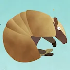
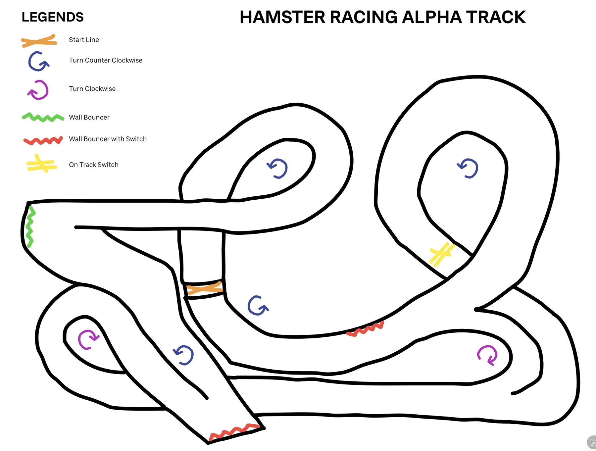
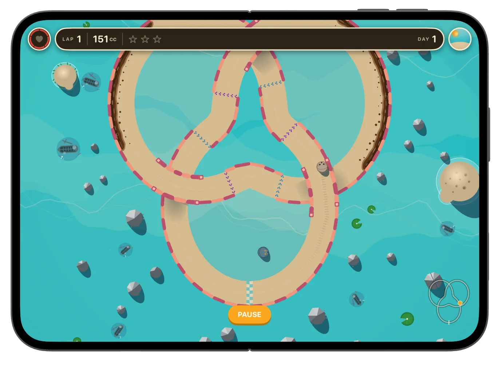
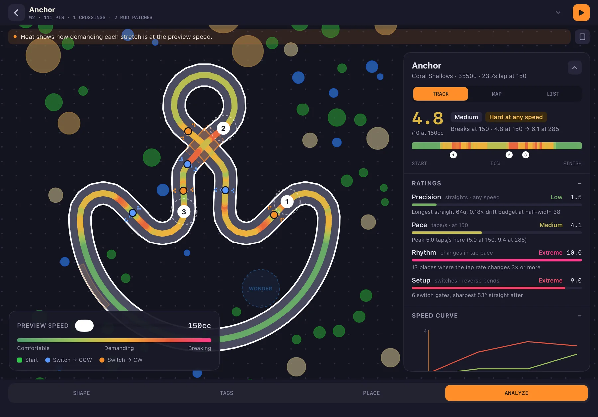
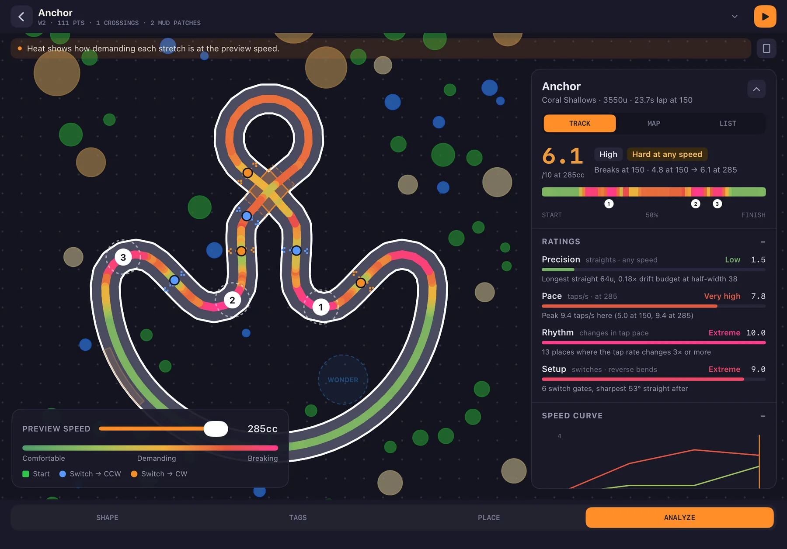
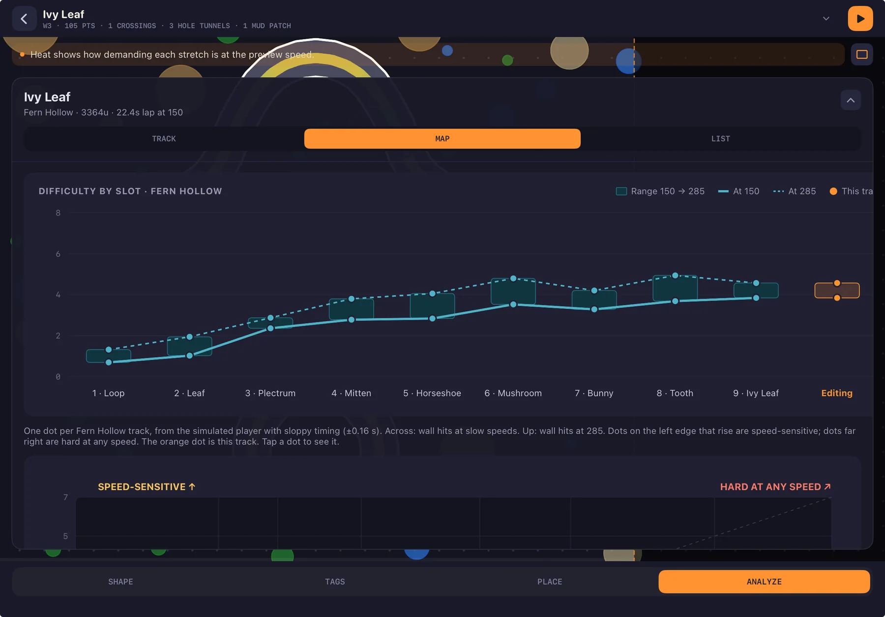

An Idea That Wouldn't Leave
When the first iPad came out, a friend and I launched our first app together, a game called TicToe Fury. Right after that we sketched out another idea: Hamster Racing. A little animal in a ball, a looping track, and one button.
We never got it where we wanted it, so we moved on. But the idea stuck with me.
Years later I opened a blank Xcode project and typed "Initial Commit." That was July 28, 2026. The project in Xcode is still called HamsterRacing. The game it turned into is called Animal Loop.
I built it for myself, my friends, and my family. Now it's ready for anyone who wants a quick, satisfying game for a few spare minutes.

ICON

The Whole Game Is One Tap
Here's the rule that drives everything: your animal rolls forward in a straight line, and every tap turns it. That's it. You never steer with a stick and there's no brake. You get a rhythm, a road, and walls that hurt.
That simple rule turned out to be hard to build around. If the only input is when you tap, then every curve, every width and every decoration on a track changes how hard it is. A track 10% too narrow isn't "a bit harder." It can be impossible.


A few things I added along the way:
- Figure-8s with real bridges and tunnels. Tracks can cross themselves. The game works out which arm you're on from your lap progress, not your direction, so you never "snap" onto the wrong road at a crossing.
- Direction-switch gates that flip which way a tap turns you, mid-lap.
- Mud patches that slow you depending on how much of your ball is in them.
- Mole tunnels: hit the mole and it digs you a shortcut.
- Rims that break. Hit the same wall enough times and the sand, stone or wood border visibly cracks apart.
- A real-time day/night cycle on every track, with shadows that follow the sun.
Picking a Track, Building a Track
The level selector
The first two versions of the level selector laid the tracks out along a path, like stops on a board-game map. With four tracks that worked. Once each world grew to nine, the path got long, and you had to scroll just to see what was left to play.
The final version drops the path. You swipe between worlds at the top, and each world shows its nine tracks as a 3×3 grid. Every card is the track's own outline, so you recognize a track by its shape before you read its name, and the stars show at a glance what you've already mastered.
Under the grid sits the Grand Prix. Every world got one: all nine tracks raced back-to-back against that world's rival animal, with your best total time on the card. Selecting it shows the nine track shapes in race order, so you know exactly what you're signing up for. It gave each world an ending, and it gave every single track a reason to be replayed.
The Level Creator
The first tracks were circles written by hand in code. Within two days I'd moved them to JSON files. On day three I started building a level editor, because hand-typing coordinates for a figure-8 is nobody's idea of fun.
That editor grew into the most-used tool in the project. Every one of the game's 27 tracks was built in it.
The editor is split into four areas, one for each part of making a track:
Drop, drag and insert points, or free-draw a track with your finger. One tap smooths it into clean curves.
The racing rules: start line, switch gates, mole tunnels, mud patches, which sides get a rim, and which arm of a crossing is the bridge.
Decoration: trees, cacti, rocks, hills, a landmark for each world, ground decals, and the "Wonder zone" where your rival animal hangs out and taunts you.
A live difficulty report, with heat maps showing exactly where players will crash. (More on this next.)
Some details I'm proud of:
- Handles that scale with zoom, so you can grab a point whether you're zoomed all the way in or out.
- Screen previews. A FIT button cycles through portrait, landscape and square screens and dims whatever that screen wouldn't show. A tree that looks great on iPad can't end up hidden behind the HUD on iPhone.
- Instant play-test. I needed to test a change live on my device without going back to the code and rebuilding every time. One button drops you into the real game on the track you're editing, and an "Edit" button takes you right back.
- Simulated competition. Racing alone tells you how a track feels, not how a race on it plays out. In play-test I can line up simulated racers and set each one's speed and starting position, so I can test different scenarios: a pack bunched at the start, or a fast rival closing from behind. They race as ghosts with a live standings ladder, just like the real Grand Prix.
- Time of day control. Lock the clock at dusk, speed the day up, or tie it to laps. That let me tweak the UI against every light, and understand what speeds work best once a track gets dark.
Hand-typing coordinates for a figure-8 is nobody's idea of fun.
Why I Had to Write My Own Simulation Engine
This is the part I never planned for.
With 9 tracks per world and a Grand Prix that races them all back-to-back, the difficulty curve became the whole game. Track 3 needs to be a little harder than track 2, and track 9 needs to feel like a finale without being a wall. Play-testing by hand only goes so far. I'd change a curve, play it twenty times, and still not know if it was harder or if I was just tired.
So I built two tools that work together.
The Track Analyzer: rating a track with math
The analyzer reads a track's geometry and scores it on four axes:
How tight the road is for the turns it asks of you
How much time you get between decisions
How steady the tap pattern is, or how often it changes on you
How much a turn depends on where you came out of the last one
Those combine into an overall rating and a difficulty profile. The analyzer also paints a heat map right onto the track in the editor: cool where it's easy, hot where players will crash.


The Track Simulator: a bot that plays every track
Formulas only tell you so much, so I also wrote a simulated player: a bot that drives the track using the exact same tap rules you do. It plays every track at a range of speeds with a range of human-like timing mistakes, and records two things:
- the speed curve, meaning how survivable the track is as speed goes up
- the break speed, the point where even a good player starts losing
Every track gets rated from 150cc to 285cc. That two-number range is how I describe a track's difficulty.
Auto-Adjust: tell the track how hard to be
Once I could measure difficulty, I could aim for it. The editor's ADJUST tool lets me drag a two-thumb slider to a target difficulty band. A search then tries scaling, stretching and road-width changes, rates every candidate with the analyzer, and rejects anything that breaks the track's shape rules (crossings stay at clean angles, and roads never squeeze too close together). Then it hands back the closest match. Decorations and the rival's zone scale along with it, so nothing ends up in the middle of the road.
If a shape can't hit the target, it tells me what it would need. Sometimes the answer is "this track needs a new mechanic, not a bigger size."
Seeing the whole ladder at once
The analyzer also runs on every track in the game and plots them on one chart, slot by slot, world by world. That chart is how I rebuilt all three worlds' progressions in October: I could see the whole difficulty ladder and spot the track that jumped too far.

I'd change a curve, play it twenty times, and still not know if it was harder — or if I was just tired.
Racing Ghosts, Not Clocks
Every world ends in a Grand Prix: all nine tracks, back-to-back, at one speed you pick, with a lights-out transition between legs. Beat the world's rival animal and they join your roster.
The game keeps track of your Game Center friends' best time on every run, and shows them right there on the track as translucent ghosts. You always have a reference: you can see where your friend was at this exact moment in their best lap, and know straight away whether you're doing great or falling behind.

Everything Drawn by Hand (in Code)
There isn't a single texture file for the characters or worlds in Animal Loop. All 18 animals, from hamster and armadillo to puffer fish, octopus, red panda, owl and penguin, and every cactus, coral rock and fern, are drawn from code shapes. Each animal has its own poses: asleep, cheering, side view and top-down rolling.
That made the game crisp at any size. It also taught me a hard lesson about performance.
Some other things that come from building it all myself:
- Every track looks unique but stays the same. Each track's name seeds its own decoration variations, so a forest track always grows the same trees in the same spots.
- Music that follows you. The soundtrack is MIDI played through a soundfont, so each world can reassign instruments and the music can react to the race.
- Built for one hand, on any device. iPhone, iPad, and even the foldable iPhone Duo's split screen.
 Hedgehog
Hedgehog Hamster
Hamster Armadillo
Armadillo Puffer
Puffer Ladybug
Ladybug Chipmunk
Chipmunk Mole
Mole Tortoise
Tortoise Frog
Frog Owl
Owl Red Panda
Red Panda Otter
Otter Koala
Koala Rabbit
Rabbit Octopus
Octopus Chinchilla
Chinchilla Sugar Glider
Sugar Glider Horsefish
Horsefish
World 1Dune Flats

World 2Coral Shallows

World 3Fern Hollow